PDF im Reader öffnen (Adobe Acrobat, Microsoft Edge, Vorschau …).
Seite für Seite durchgehen — zuerst «Vorher / Nachher», dann je Seite eine Station oder Funktion.
Mit dem Kommentar-/Textwerkzeug direkt in die linierte Box schreiben: was stört, was fehlt, was anders soll. Auch Handschrift/Stift geht.
Das kommentierte PDF hier in den Chat zurückschicken.
Was diese Runde ist — und was mit deinen Notizen passiert
0.6.6 heisst «Bewegung & Anpassung»: der Knopfdruck ist jetzt spürbar
(jeder Knopf sinkt beim Drücken sichtbar ein und federt beim Loslassen),
eine Arbeitsmodi-Automatik lässt die Oberfläche der Tätigkeit statt dem
Menü folgen (Modus-Chip, «Mehr…» hält alles erreichbar), Kosmo kann die
Oberfläche jetzt nicht nur lesen, sondern auch selbst stellen — sichtbar
quittiert in einer eigenen Chat-Zeile, nie still — und der 3D-Viewport
rendert nur noch bei Bedarf statt im Dauerbetrieb (0 statt ~16 Bilder/s
im Leerlauf). Dazu: ein Render-Knopf direkt im 3D-Viewport, eine
KosmoVis-Kuratier-Fläche für fertige Renderbilder, eine kategorisierte
Node-Palette, eine Minimap und entzerrte Node-Ketten. Die zehn Punkte
stehen in neuigkeiten.ts (Version 0.6.6). Seiten mit «NEU»
zeigen, was seit dem 0.6.5-PDF dazugekommen ist; das Kapitel
«Vorher / Nachher» direkt nach dieser Seite stellt drei Umbauten Bild
gegen Bild — mehr gaben die vorhandenen 0.6.5-Bilder ehrlich nicht her
(eine vierte Gegenüberstellung hätte einen sauberen Vorher-Screenshot
gebraucht, den es für den 3D-Viewport in dieser Form 0.6.5 noch nicht
gab). Eine eigene Seite («Bewegung, die sich nicht fotografieren lässt»)
benennt offen, was ein Standbild-PDF grundsätzlich nicht zeigen kann.
Deine Notizen zu diesem PDF werden die
0.6.7-Auftragsliste.
Vorher / Nachher — was diese Runde umgebaut hat (1/2)
KosmoDesign — Statuszeile mit Modus-Chip
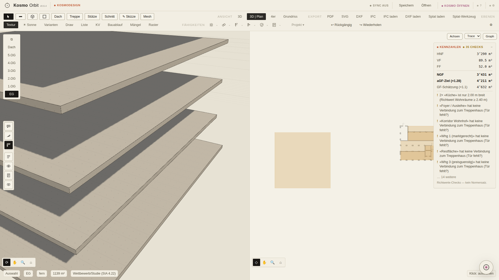
Vorher — 0.6.5 (Release-Stand)
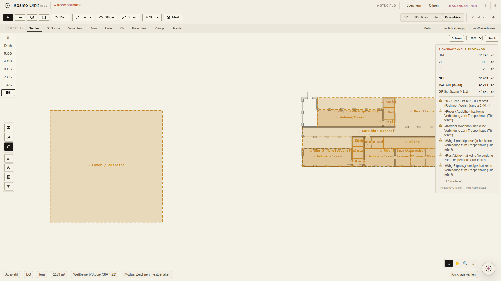
Nachher — 0.6.6 (Release-Stand)
Vorher endete die Statuszeile nach Werkzeug/Geschoss/LOD/Fläche/Phase — kein Hinweis darauf, wofür die Oberfläche gerade eingerichtet ist. Neu: ein Modus-Chip («Modus: Zeichnen · festgehalten») macht sichtbar, welchen der neun Arbeitsmodi die Automatik erkannt hat (oder ein Mensch von Hand gewählt/festgehalten hat) — ein Klick öffnet die Modusliste samt Festhalten/Automatik-Schaltern. Die zweite, hier nicht bebilderbare Hälfte des Umbaus: sobald ein Modus feststeht, treten Export/Fähigkeiten aus dem Hauptband zurück (bleiben vollständig unter «Mehr…» erreichbar) — der Vergleich zeigt bewusst den Voll-UI-Vorher- gegen den Zeichnen-Modus-Nachher-Zustand, nicht zwei identische Werkzeugzeilen.
KosmoVis — Node-Graph mit Minimap und entzerrten Ketten
Vorher — 0.6.5 (Release-Stand)
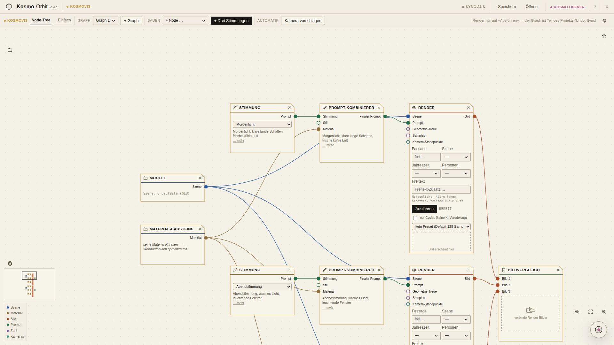
Nachher — 0.6.6 (Release-Stand)
Vorher endete die Werkzeugausstattung des Node-Graphen bei Zoom-Leiste, Legende und dem V-H4-Render-Formular — bei mehreren «Drei Stimmungen»-Ketten überlagerten sich Karten dort, wo zwei Ketten zusammenstiessen (im 0.6.5-PDF als offener Befund benannt). Neu: eine Minimap unten links (ab 5 Nodes automatisch sichtbar, Klick/Drag verschiebt den Viewport direkt) und eine Entzerrung, die eine zweite «Drei Stimmungen»-Kette versetzt unter die erste legt statt über sie — im Nachher-Bild sichtbar an der Minimap: der Rahmen markiert den Ausschnitt, die zweite Ketten-Wolke liegt frei darunter. Nicht im Bild, aber ebenfalls neu: eine kategorisierte Node-Palette und eine Kuratier-Fläche für fertige Renderbilder (siehe eigene Seiten).
✍️ Verbesserungen / Befunde:
Vorher / Nachher — was diese Runde umgebaut hat (2/2)
Zentrale — Fächer mit sichtbarem Bezug zum Planeten
Vorher öffnete der Fächer beim Hover ohne erkennbaren Bezug zu seinem Planeten-Kreis — er stand einfach daneben. Neu: der Fächer öffnet federnd AUS dem Kreis heraus (das Federn selbst ist Bewegung und in einem Standbild nicht seriös zeigbar), landet aber in einem Zustand mit sichtbarem Akzent-Rahmen und einer Verbindungslinie zum Ursprungs-Planeten — der Bezug bleibt auch im Standbild ablesbar. Die Werkzeug-Icons sind ausserdem auf die einheitliche Tusche-Norm nachgezeichnet (in diesem engen Bildausschnitt kaum sichtbar, aber Teil desselben Commits).
✍️ Verbesserungen / Befunde:
Erster Start — «Neu hier?»
Aus 0.6.3, unverändert diese Runde: beim allerersten Start fragt Kosmo in der Zentrale, ob ein Rundgang gewünscht ist. «Nein» heisst nie wieder — die Frage lässt sich über das «?» in der Kopfleiste jederzeit erneut auslösen.
✍️ Verbesserungen / Befunde:
Orbit-Startmenü — Fächer mit sichtbarem Bezug NEU
Die aufgeräumte Zentrale ist aus 0.6.5 (Werkzeug-Namen unter den Kreisen, echte Karteikarten, klare Katalog-Knöpfe) — unverändert. NEU 0.6.6: der Fächer öffnet jetzt federnd aus seinem Planeten heraus statt einfach zu erscheinen, und trägt einen Akzent-Rahmen plus eine Verbindungslinie zum Ursprungs-Kreis (Extra-Bild) — im Standbild ist nur der Endzustand mit Rahmen/Linie zu sehen, das Federn selbst nicht (siehe Vorher/Nachher-Kapitel). Die Werkzeug-Icons sind zudem auf die einheitliche Tusche-Norm nachgezeichnet.
✍️ Verbesserungen / Befunde:
Kosmo — Symbol statt Dauerchat
Aus 0.6.3, unverändert diese Runde: Kosmo bleibt ein schwebendes Symbol statt eines dauerhaft offenen Panels. Hover zeigt ein Mini-Popup mit der letzten Aktivität, ein Klick entfaltet bei Bedarf das grosse Panel. NEU 0.6.6 (nicht auf diesem Bild): Kosmo gibt sich in der Cloud-Betriebsart nicht mehr als Basismodell aus — auf direkte Nachfrage antwortet sie ehrlich (Anthropic Claude).
✍️ Verbesserungen / Befunde:
Einstellungs-Panel — jetzt mit den 0.6.6-Neuigkeiten oben
Kopf, Schliessen-Zeichen und sichtbarer Scrollbalken sind aus 0.6.5, unverändert. «Funktionen & Neues» (mittleres Extra-Bild) führt jetzt die zehn 0.6.6-Punkte zuoberst. Die Sektionen Darstellung/Leistung (rechtes Extra-Bild) bleiben inhaltlich unverändert — NEU dort ist einzig der Renderloop-on-demand-Schalter (siehe Leistungs-Sektion, textlich, kein eigenes Bild: der 3D-Viewport rendert nur noch bei Kamerabewegung/Änderungen statt dauernd, im Leerlauf 0 statt ~16 Bilder/s — abschaltbar, falls das «ruckelig» wirkt).
✍️ Verbesserungen / Befunde:
Werkzeug-Kurztasten + «?»-Übersicht
Aus 0.6.4, unverändert diese Runde: «?» blendet die Kurzbefehl-Übersicht ein, der Abschnitt «Zeichnen» zeigt die Werkzeug-Kurztasten (A Auswahl, W Wand, Z Zone, V Volumen, D Dach, T Treppe, C Stütze, S Schnitt, F Freihand-Skizze) plus «Leertaste halten + ziehen» fürs Verschieben im 2D-Plan.
✍️ Verbesserungen / Befunde:
KosmoDesign — Werkzeugkopf (Struktur aus 0.6.5)
Die entrümpelte Struktur (eine Hauptzeile + Kontextzeile, Export als aufklappbare Gruppe, gerahmte Geschossleiste) ist aus 0.6.5, unverändert. NEU 0.6.6 sitzt am ANDEREN Ende der Oberfläche, in der Statuszeile: der Modus-Chip (eigene Seite «Arbeitsmodi») — dieses Bild zeigt bewusst den Voll-UI-Zustand ohne aktiven Modus, damit der 0.6.5-Kopf 1:1 mit dem Vorgänger-PDF vergleichbar bleibt. Der 4er-Splitscreen (Extra-Bild) bleibt unverändert nutzbar.
✍️ Verbesserungen / Befunde:
Masszahl am Cursor — «Zahlen zur Hand»
Aus 0.6.4, unverändert diese Runde: beim Zeichnen läuft eine Live-Masszahl am Cursor mit (hier «3.5 m ⏎» nach dem Tippen von «3.5»); Enter setzt den nächsten Punkt exakt in dieser Länge.
✍️ Verbesserungen / Befunde:
Element-Fang — Fangpunkt-Marker beim Zeichnen
Aus 0.6.4, unverändert diese Runde: das Quadrat am Wandende ist der Fangpunkt-Marker (Typ «endpunkt»), er erscheint erst innerhalb des Fangradius und zieht den nächsten Klick exakt auf die Bauteilgeometrie statt aufs 250er-Raster.
✍️ Verbesserungen / Befunde:
Plan-LOD — Detailstufe aus der Distanz
Aus 0.6.3, unverändert diese Runde: nah dran (links) zeigt Bemassung, Raster und Möbel; weit weg (rechts) bleiben nur Poché und Fenstersymbole.
✍️ Verbesserungen / Befunde:
Skizzieren — drei Annäherungen
Aus 0.6.3, unverändert diese Runde: ein Freihand-Strich im Skizzieren-Modus ergibt am Übergabe-Moment drei Karten (u.a. eine orthogonalisierte Variante), als EIN atomarer Undo-Schritt.
✍️ Verbesserungen / Befunde:
Kosmo-Vorschlagskarte — mit Vorschau
Aus 0.6.3, unverändert diese Runde: die Diff-Karte zeigt einen Vorher/Nachher-Mini-Grundriss statt nur Text. NEU 0.6.6 (nicht auf diesem Bild): Kosmo kann Aktionen auch DIREKT ausführen (Modus setzen, Panel öffnen …) — dieser Weg läuft dann NICHT über die Diff-Karte, sondern über eine eigene, sofort sichtbare Chat-Zeile (siehe Seite «Kosmo-UI-Brücke»), damit die beiden Wege ehrlich unterscheidbar bleiben.
✍️ Verbesserungen / Befunde:
Phasen-Presets — Angebot, nie stumm
Aus 0.6.3, unverändert diese Runde: wechselt die SIA-Teilphase, bietet Kosmo passende Fähigkeits-Icons als Fokus an. «Nicht jetzt» lässt alles unverändert.
✍️ Verbesserungen / Befunde:
KV-Grobschätzung
Aus 0.6.3, unverändert diese Runde: Richtwert-Kostenvoranschlag auf GF-Basis mit stets sichtbarem Ehrlichkeits-Hinweis («kein Devis, keine NPK-Positionen»).
✍️ Verbesserungen / Befunde:
Bauablaufplan
Aus 0.6.3, unverändert diese Runde: abgeleiteter Grob-Terminplan mit fester Gewerke-Reihenfolge, Export als druckfähiges SVG-Blatt.
✍️ Verbesserungen / Befunde:
Mängel & Abnahme
Aus 0.6.3, unverändert diese Runde: Mängel erfassen, Status umschalten, Abnahmeprotokoll als SVG exportieren — kein rechtsgültiges SIA-118-Protokoll.
✍️ Verbesserungen / Befunde:
Baugesuch-Blattsatz — Publish
Aus 0.6.5, unverändert diese Runde: gemeinsame Formensprache (eine klare Knopf-Hierarchie, gerahmte Export-Gruppen), ein Klick erzeugt mehrere Blätter plus ein Set «Baugesuch»; fehlende Grundlagen werden als ehrliche Lücken-Meldung benannt.
✍️ Verbesserungen / Befunde:
Blatt füllen
Aus 0.6.3, unverändert diese Runde: platziert Grundriss, Axonometrie, Kennzahlen-Textblock und Render-Platzhalter atomar und meldet ehrlich, was im Modell fehlt.
✍️ Verbesserungen / Befunde:
KosmoVis — Node-Graph (Grundausstattung aus 0.6.5)
Kategorie-Zeichen, Zoom-Leiste, Legende und das V-H4-Render-Formular (Fassade/Szene/Jahreszeit/Personen, sichtbarer finaler Prompt) sind aus 0.6.5, unverändert — die Ansicht ist auf die ganze «Drei Stimmungen»-Kette eingepasst (Morgenlicht/Abendstimmung/Weissmodell samt Bildvergleich-Node); die Formular-Details in Gross zeigt die Minimap-Seite weiter hinten. Einzige 0.6.6-Zutat in diesem Bild: die Minimap unten links, die ab 5 Nodes automatisch erscheint. Ebenfalls neu in 0.6.6, auf den Folgeseiten: Node-Palette, Kuratier-Fläche und die Entzerrung mehrfacher «Drei Stimmungen»-Ketten.
Aus 0.6.3/0.6.4, unverändert diese Runde: «Kamera vorschlagen» erzeugt Kamera-Standpunkte, Cycles-Presets wählen die Render-Qualität, «Ausführen» schickt den Job an die (hier Fake-)Bridge. NEU 0.6.6: derselbe Render-Weg ist jetzt zusätzlich direkt aus dem 3D-Viewport erreichbar, ohne den Umweg über den Node-Graphen (siehe Seiten «Viewport-Render-Knopf»).
✍️ Verbesserungen / Befunde:
Materialbibliothek — Würfel-Vorschau
Aus 0.6.3, unverändert diese Runde: jedes Material zeigt einen 3D-Würfel (echte Canvas-Vorschau), echte Dimensionen und eine Pflicht-Quelle.
✍️ Verbesserungen / Befunde:
KosmoData — Leerbild-Signete
Aus 0.6.5, unverändert diese Runde: gezeichnetes Signet «kein Bild hinterlegt» statt leerer Farbfläche, Karten heben sich über Linienstärke statt Schatten, klare beschriftete Knöpfe für Sync/Zurücksetzen. Rechtes Extra-Bild: der CH-Bauteilkatalog unter demselben Dach.
✍️ Verbesserungen / Befunde:
KosmoDev — Auftragsbuch
Aus 0.6.5, unverändert diese Runde: Aufträge erfassen, priorisieren, als Workorder exportieren — genau hier landet auch die 0.6.7-Auftragsliste aus diesem PDF.
✍️ Verbesserungen / Befunde:
KosmoPrepare / KosmoDoc / KosmoTrain
Aus 0.6.5, unverändert diese Runde: gemeinsame Formensprache (ein Primärknopf je Bereich, gerahmte Export-Gruppen, gezeichnete Leerzustände, gruppierte Werkzeugzeilen). Der Doc-Tab «Tech-Radar» hat eine eigene Seite (nächste Seite).
✍️ Verbesserungen / Befunde:
KosmoDoc — Tech-Radar
Aus 0.6.4, unverändert diese Runde: worauf die Software technisch steht (Adopt/Selbst/Reject je Baustein) und was noch beobachtet wird, in einer kuratierten Liste. Einträge aus dem Notion-Scan sind ehrlich mit ⚠ markiert, weil noch nicht selbst verifiziert.
✍️ Verbesserungen / Befunde:
KosmoDraw — Modellbaum · Mengen · Ausmass
Aus 0.6.3/0.6.4, unverändert diese Runde: Mengen, Ausmass und Berechnungsliste aus dem Modell; daneben KosmoSketch fürs freie Zeichnen (Extra-Bild).
✍️ Verbesserungen / Befunde:
Umbau — Bestand / Abbruch / Neu
Bestand einheitlich grau, kein Diagonalkreuz, SIA-saubere Umbau-Blätter — aus 0.6.2, unverändert diese Runde.
✍️ Verbesserungen / Befunde:
Volumenstudien — Zonenregel-gespeist
Zonenregel speist die Studie, Geschosshöhe mit Herkunft, Besonnungs-Richtwert und Raumprogramm-Erfüllung je Extremvariante — aus 0.6.1/0.6.2, unverändert diese Runde.
✍️ Verbesserungen / Befunde:
Grundlagenstudie-Bericht
Empfehlung mit Begründung zuerst, dann die Vergleichstabelle mit echten Zahlen, dann die Grenzen der Studie als eigener Block — aus 0.6.2, unverändert diese Runde.
✍️ Verbesserungen / Befunde:
Unternehmerplan — ehrlicher PDF-Pfad
Datei ins Fenster ziehen genügt; ein hochgeladenes PDF wird ehrlich erkannt statt in den DXF-Import zu laufen — aus 0.6.1/0.6.2, unverändert diese Runde.
✍️ Verbesserungen / Befunde:
Claude-Modellwahl
Aus 0.6.4, unverändert diese Runde: im Kosmo-Panel (Zahnrad → Betriebsart Cloud) steht ein Modell-Select mit den aktuellen Claude-Modellen plus Freitext-Override. NEU 0.6.6 (nicht auf diesem Bild): in dieser Betriebsart gibt sich Kosmo nicht mehr als Basismodell aus — auf Nachfrage antwortet sie ehrlich, welches Modell sie ist.
✍️ Verbesserungen / Befunde:
App deinstallieren — in den Einstellungen
Aus 0.6.4, unverändert diese Runde: der Einstieg wohnt nur in den Einstellungen (Sektion «System»). Der Dialog bleibt ehrlich: KosmoOrbit kann sich als Tauri-App nicht selbst deinstallieren.
✍️ Verbesserungen / Befunde:
Knopfdruck spürbar — Ruhe / gedrückt NEU
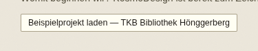
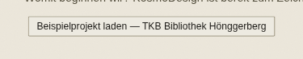
Jeder Knopf in der App reagiert jetzt beim Drücken sichtbar: kurzes Einsinken (Skalierung 0.97) plus Tusche-Abdunklung, federndes Loslassen. Bewegung selbst zeigt kein Standbild — aber der GEDRÜCKTE Zwischenzustand lässt sich fotografieren (Maustaste gehalten, ohne loszulassen): beide Bilder zeigen denselben Knopf («Beispielprojekt laden» in der Zentrale) UNTER der Maus — links in Ruhe, rechts im gedrückten Moment, minimal kleiner und dunkler. Der Effekt ist bewusst dezent (3% Skalierung, 80ms) — er soll spürbar sein, nicht theatralisch; entsprechend fein ist auch der Unterschied im Standbild. Das Federn beim Loslassen bleibt unbebildert — dafür gibt es keinen ehrlichen Standbild-Beweis.
✍️ Verbesserungen / Befunde:
Arbeitsmodi — Design im Modus «Zeichnen» NEU
Die Oberfläche folgt jetzt der Tätigkeit statt dem Menü: KosmoDesign erkennt aus Werkzeug/Ansicht/Panels/Eingabegerät/Bauphase einen von neun Arbeitsmodi (Entwerfen, Zeichnen, iPad-Skizzieren, Varianten vergleichen, PDF exportieren, 3D modellieren — die übrigen drei sind vorerst nur als Stations-Zuordnung wirksam, Feinrollout ehrlich auf 0.6.7 vertagt). Der Modus-Chip in der Statuszeile zeigt «Modus: Zeichnen · festgehalten» — in der Live-Erkennung braucht ein Moduswechsel 5s Signal-Stabilität (Hysterese, hier durch einen gesetzten Zustand übersprungen, damit das Bild ohne Zeitsprung entsteht). Ausgeblendete Gruppen (Export/Fähigkeiten) bleiben vollständig unter «Mehr…» erreichbar (nächste Seite).
✍️ Verbesserungen / Befunde:
Arbeitsmodi — Chip-Menü (Modus wählen, Festhalten, Automatik) NEU
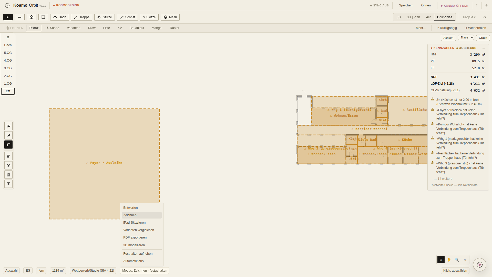
Ein Klick auf den Modus-Chip öffnet die Liste aller sechs vollständig ausgerollten Modi (Entwerfen/Zeichnen/iPad-Skizzieren/Varianten vergleichen/PDF exportieren/3D modellieren) plus zwei Schalter: «Festhalten» friert den aktuellen Modus ein (die Automatik greift dann nicht mehr ein, auch nicht bei starken neuen Signalen), «Automatik aus» schaltet die Erkennung ganz ab — dann zeigt die Oberfläche sofort wieder alles (Voll-UI), ohne auf einen weiteren Signalwechsel zu warten. Der Tooltip auf dem Chip nennt die Begründung («2D-Plan aktiv», «Zeichenwerkzeug aktiv…») — Ehrlichkeits-UI, keine stille Entscheidung.
✍️ Verbesserungen / Befunde:
Arbeitsmodi — «Mehr…» hält alles erreichbar NEU
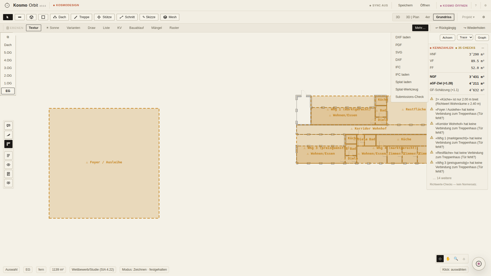
Sobald ein Modus feststeht, treten Gruppen zurück, die dort nicht zur Tätigkeit passen — im Modus «Zeichnen» z.B. Export und «Fähigkeiten» (redundanter Zweitzugang zu «Ebenen»). Zurücktreten heisst NICHT verschwinden: das «Mehr…»-Überlaufmenü listet beide Gruppen vollständig und vollständig anklickbar auf — ein Eintrag darin funktioniert exakt wie der Original-Knopf (One-Click, kein zweiter Umweg). Nichts wird unerreichbar, nur unprominent.
✍️ Verbesserungen / Befunde:
3D-Viewport — Render-Knopf NEU
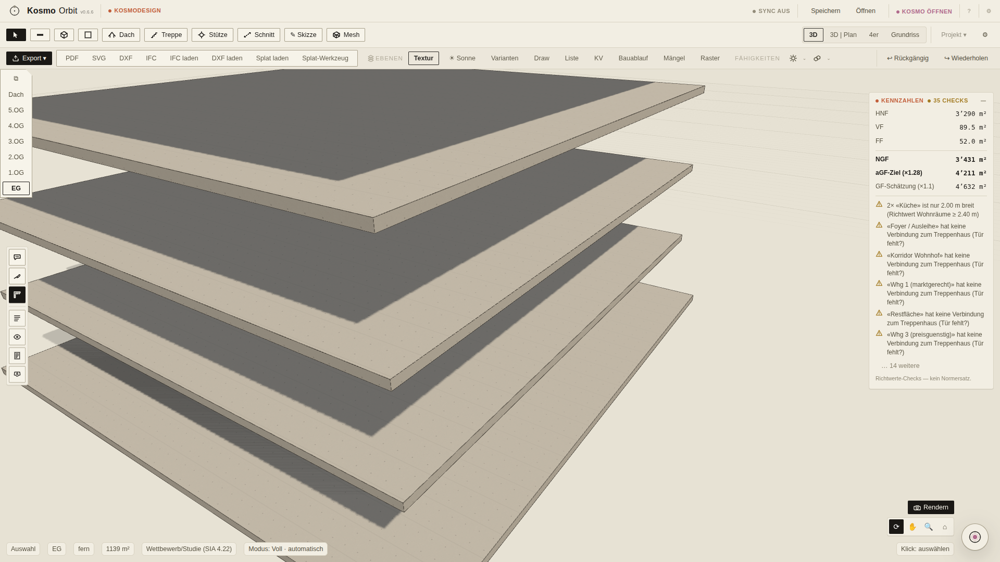
Ein Rendern-Knopf sitzt jetzt direkt im 3D-Viewport (rechts unten, über der Orbit/Pan/Zoom/Fit-Leiste) und stösst DIESELBE KosmoVis-Render-Kette an wie der Node-Graph — kein Umweg über KosmoVis nötig, um schnell ein Bild vom aktuellen Modellstand zu bekommen. Ohne verbundene HomeStation bleibt der Knopf mit einer ehrlichen Meldung deaktiviert («Kein HomeStation-Server verbunden…») statt eines stillen Fehlschlags.
✍️ Verbesserungen / Befunde:
3D-Viewport — Render fertig, direkt aufs Blatt NEU
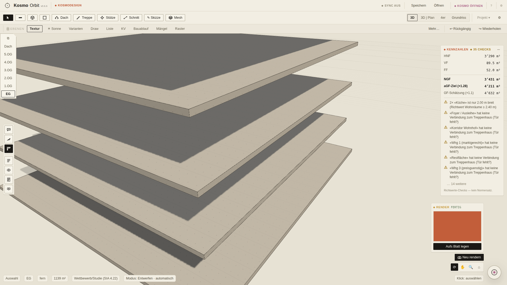
Nach dem Klick läuft derselbe Status-Zyklus wie in KosmoVis (gesendet → wartet auf GPU-Leerlauf/Freigabe → rendert → fertig); das Ergebnisbild erscheint im selben Eck-Panel, «Aufs Blatt legen» schiebt es direkt in KosmoPublish weiter. Dieses Bild ist ein ECHTER Durchlauf über die Fake-Worker-Bridge — kein Platzhalter.
✍️ Verbesserungen / Befunde:
KosmoVis — kategorisierte Node-Palette NEU
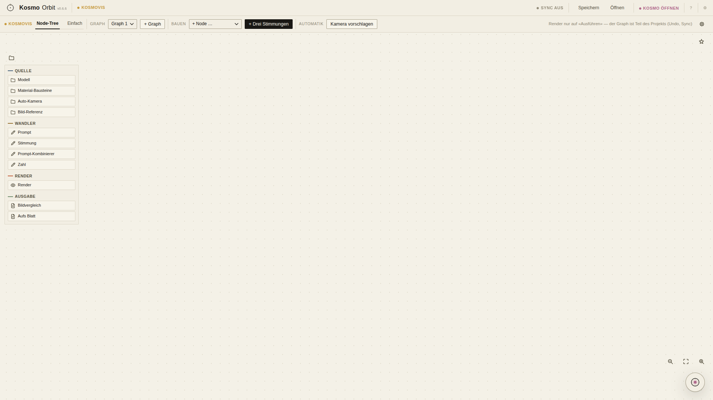
Eine eigene Palette (oben links im Node-Graphen) listet alle verfügbaren Node-Typen nach Kategorie geordnet, statt sie nur über ein einzelnes Auswahlmenü zugänglich zu machen — dieselbe Kategorie-Farbcodierung wie die Nodes selbst und die Legende. Ergänzt das bestehende Auswahlmenü, ersetzt es nicht.
✍️ Verbesserungen / Befunde:
KosmoVis — Kuratier-Fläche NEU
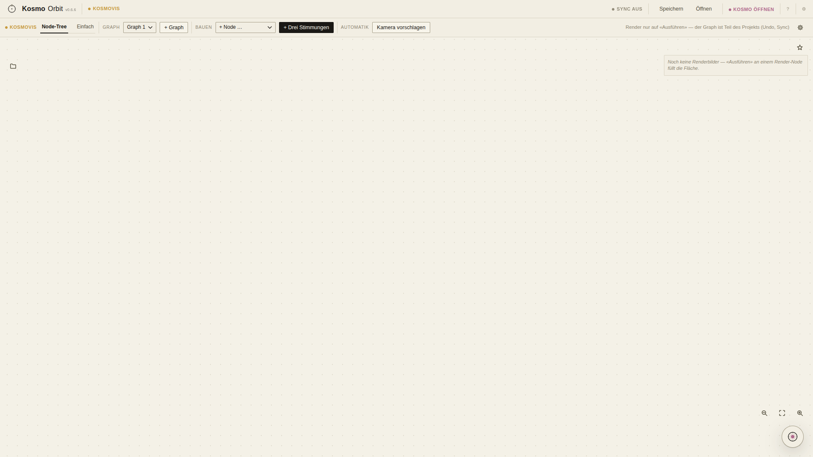
Eine eigene Fläche sammelt fertige Renderbilder als Karten: merken, verwerfen, zwei Bilder direkt vergleichen — statt fertige Ergebnisse nur lose im Graphen verstreut zu lassen. Auf diesem Bild ist die Fläche im Leerzustand (frischer Graph, noch kein Render gelaufen) — die Funktion selbst ist bewiesen (E2E), das Bild zeigt ehrlich den Startzustand statt eines nachträglich befüllten Musters.
✍️ Verbesserungen / Befunde:
KosmoVis — Minimap + entzerrte Ketten NEU
Eine kleine Übersichtskarte (unten links, Papier-Stil) erscheint automatisch ab 5 Nodes im Graphen, lässt sich per Klick/Drag direkt zum Verschieben des Viewports nutzen und per eigenem Knopf ein-/ausblenden. Im Bild: nach zweifachem «+ Drei Stimmungen» (24 Nodes) zeigt der Viewport-Rahmen in der Minimap den sichtbaren Ausschnitt, und die zweite Kette liegt als Rechteck-Wolke VERSETZT darunter statt über der ersten — der im 0.6.5-PDF benannte Befund («wo Ketten zusammenstossen, überlagern sich Karten noch») ist damit behoben (die E2E-Suite prüft die paarweise Überlappungsfreiheit aller 24 Node-Boxen). Bewusst nicht herausgezoomt fotografiert: im herausgezoomten Headless-Screenshot malt der Software-Renderer die Karteninhalte unskaliert übereinander (reines Aufnahme-Artefakt, im echten Betrieb ohne Befund) — bei 1:1 zeigt das Bild den ehrlichen Zustand.
✍️ Verbesserungen / Befunde:
Kosmo-UI-Brücke — Kosmo stellt die Oberfläche selbst NEU
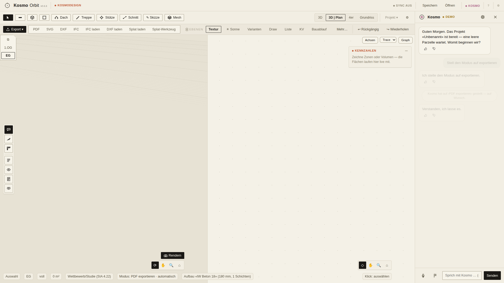
Kosmo kann die Oberfläche jetzt lesen UND einstellen: Modus, Panels, Ansicht, Werkzeug sind als eigene Werkzeuge für die KI freigegeben (`ui.*`-Registry). Auf die Bitte «Stell den Modus auf exportieren» setzt Kosmo den Arbeitsmodus direkt — sichtbar an zwei Stellen zugleich: der Modus-Chip wechselt auf «PDF exportieren», UND eine eigene Chat-Zeile («‹PDF exportieren› … auf Wunsch») quittiert die Aktion. Bewusst KEIN Diff-Karten-Weg (keine `proposal-card`) — schreibende Vorschläge am Modell bleiben Diff-Karten, aber reine Oberflächen-Aktionen sind sofortige, sichtbar quittierte Taten. Nichts passiert still.
✍️ Verbesserungen / Befunde:
Gesten mit Schwung — Kontextmenü per langem Drücken NEU
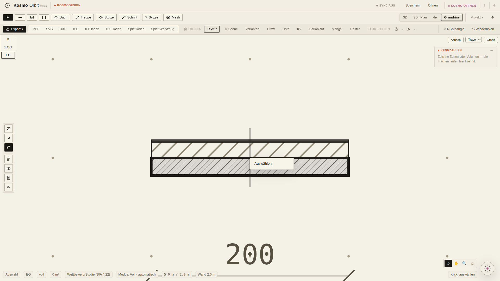
Vier Gesten kamen diese Runde dazu: schnelles Pan-Loslassen im 2D-Plan läuft mit Schwung aus (Momentum), Doppeltipp zoomt auf die Berührungsstelle, langes Drücken öffnet das Kontextmenü, auf Geräten mit Vibration gibt es feine haptische Ticks. Von den vieren ist NUR das Kontextmenü ein STATISCHER Endzustand und damit ehrlich fotografierbar — das Bild zeigt sein Desktop-Äquivalent (Rechtsklick auf ein Bauteil öffnet denselben Kontextmenü-Code wie der 3D-Viewport). Momentum, Doppeltipp-Zoom und Haptik-Ticks SIND Bewegung/Berührungssensorik und bleiben bewusst unbebildert (nächste Seite).
✍️ Verbesserungen / Befunde:
Bewegung, die sich nicht fotografieren lässt
Ein Standbild-PDF hat eine harte Grenze: Bewegung selbst zeigt es nicht. Drei 0.6.6-Punkte sind darum NUR textlich hier vertreten, nicht weil sie unwichtig wären, sondern weil ein Screenshot sie unehrlich behaupten würde: (1) Stationswechsel gleiten — beim Wechsel zwischen Stationen weicht das alte Blatt, das neue setzt federnd auf (abschaltbar über «Bewegung reduzieren» in den Einstellungen). (2) Momentum-Pan/Doppeltipp-Zoom/Haptik-Ticks im 2D-Plan (siehe vorherige Seite — nur das Kontextmenü als Endzustand ist bebildert). (3) Renderloop on-demand: der 3D-Viewport rendert im Leerlauf jetzt 0 statt ~16 Bilder/s — das lässt sich in einem einzelnen Foto nicht von einem eingefrorenen Dauerbetrieb unterscheiden, beweisbar ist es nur per Framezähler/Profiler (siehe E2E-Suite, nicht in diesem PDF). Bitte diese drei Punkte beim Probieren in der echten App direkt erleben, nicht am Bild beurteilen — Notizen dazu gerne trotzdem in die Box unten.